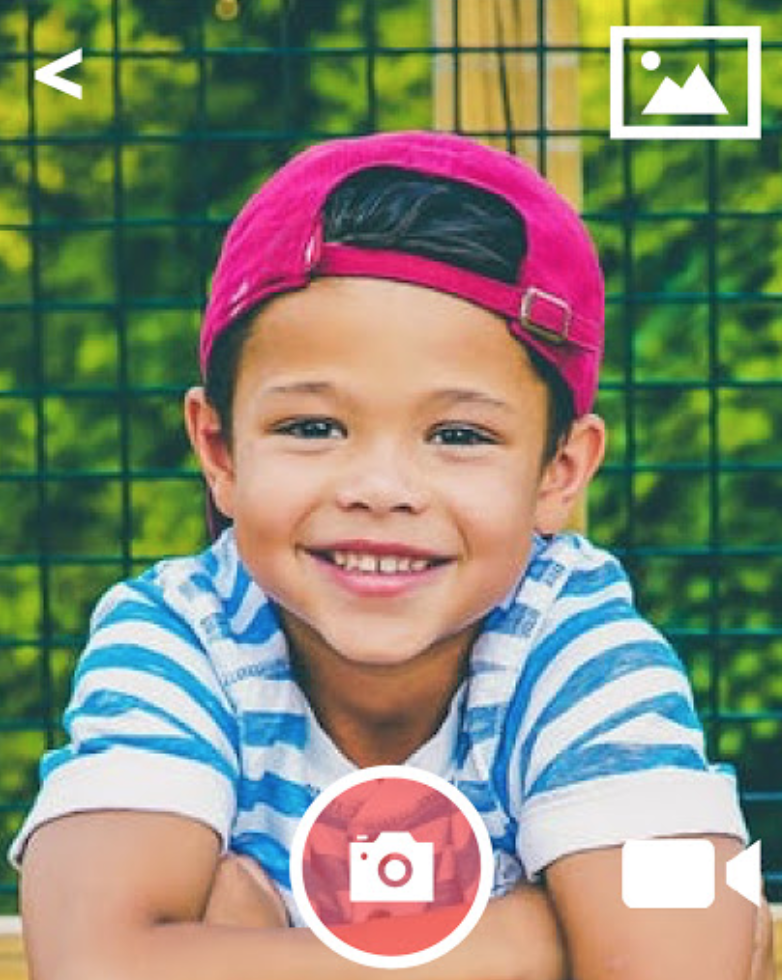
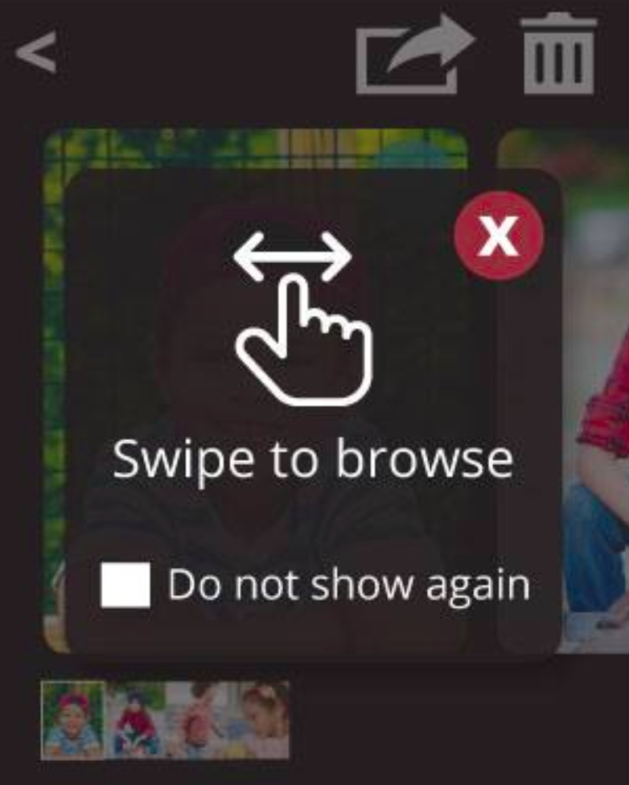
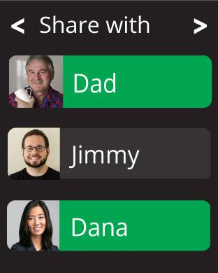
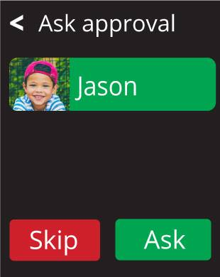
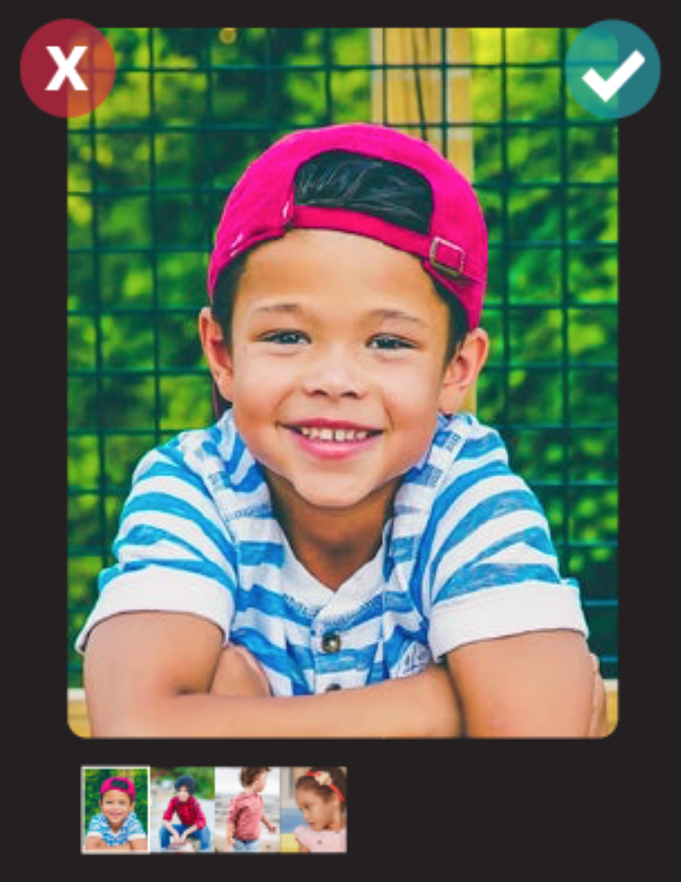

The Problem
In today’s social media dominated era, we find that parents face problems during the process of sharing memories of their children online. For instance, many parents are unhappy with the lack of control with privacy when sharing photos online. Also, the consent of children is neglected when parents post memories of them online. These are just some of the main problems that hinder parents from fully enjoying the experience of capturing and sharing memories of their children online.
Our Solution
Hence, we are designing a smart watch, MOLO (Memories of Little Ones), to help solve the problems that parents face during this process to enhance their overall experience. Our main goal is to help parents capture memories of their young children efficiently and securely, so that they can look back and reminisce on those memories in the future. We chose a smartwatch because it is lightweight, portable, and convenient for parents to use on the go when their hands are full. Also, it allows for easy connectivity between parents and children during the process of sharing memories. Overall, our hope for MOLO is that it would effectively help to foster closer ties between parents and their children through the use of a memory sharing smartwatch application.


Browse Memories Quickly

Share Memories Securely

Get Permission From Children

Approve photos for sharing
Video Prototype
Poster
The Design Process
In order to create a product that can best serve parents' needs, we needed to go through a multi-step process to "design the right thing" and to "design the thing right." First, we needed to do design research to determine exactly what features and forms they would prefer. Then, after we gained some insight, we proceeded to generate a number of ideas that seemed viable. Afterwards, we narrowed down on one specific design that we felt could best encapsulate the best of our ideas. Along the way, we received feedback from both our intended audience and fellow designers.
Design Research
We talked to multiple parents about their habits in terms of tracking their child, especially centered on things they might post on social media, like pictures, videos, or journals, as well as whether they tracked their child's health closely. From this, we learned that the primary information tracked by our participants was memories, especially in picture or video format, because they're the ones that they would like to reflect on later most. We also learned that tracking health information was relatively unimportant to most parents after 2 months of age, as they felt that relying on intuition of changes in their child was enough. One more aspect that we learned was that our parents wanted to find a more hands-free solution for sharing memories of their children.
Design Ideation
We explored several designs, but we thought that three of our ideas were the ones worth further consideration. We thought of a smart watch, which would be easily carried day-to-day and would be of a design familiar to older generations. It would have a detachable camera for easily changing the angle of taking pictures and videos. We also thought of a mobile app, which takes advantage of the ubiquitousness of smartphones today. Finally, we thought of a smart cloth, which would be easily foldable and also allow for the largest presentation of a large number of images, while potentially acting as a talking point with guests. With these designs, we wanted to emphasize the ability for voice interaction to take place, in order to give an option for hands-free use.
Design Implementation
We finally decided on the smart watch as our one design, because it was a design that most allowed for hands-free interaction, which was especially important in distinguishing our solution and for making it intuitive to use during the busy lives of our parents. We received feedback from our fellow peers that a smart cloth may not be as intuitive to interact with, and that a simple mobile app might not be distinguished enough to stand out. In the process, we changed how our camera design in our smart watch worked. We also still think it should have voice activation, though it was harder to test without directly developing our product in reality, so we reduced the emphasis during tests.